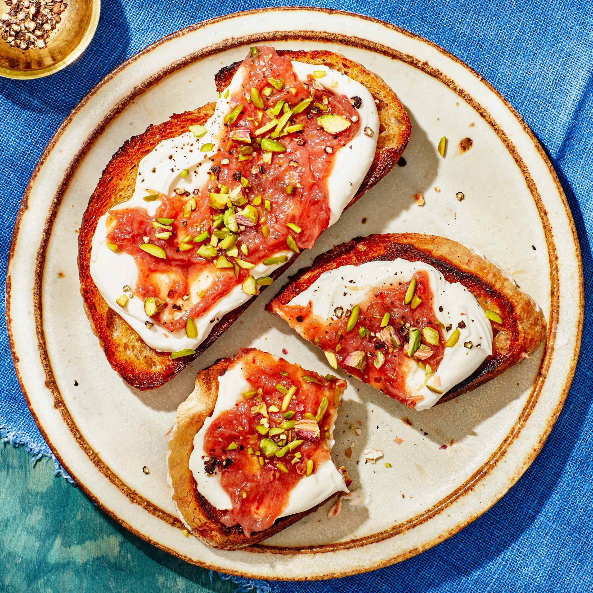

Welcome to Spring
Whipped Ricotta Toast With Date and Rhubarb Compote
This spring dish makes for a perfect breakfast or even snack. With caramelly Medjool dates
mellowed with rhubarb’s astringent tartness to match their earthy sweetness. Make extra rhubarb compote to
serve for breakfast alongside pancakes, oatmeal, or yogurt.

4 SERVINGS
Ingredients
- 5 Medjool dates, pitted, chopped
- ⅛ tsp ground cardamom
- ½ tsp kosher salt, divided
- 2 medium rhubarb stalks (about 4 oz), chopped
- 1 cup whole-milk fresh ricotta
- 3 tbsp extra-virgin olive oil, divided
- 4 1"-thick slices country-style sourdough bread
- 2 tbsp coarsely chopped raw pistachios
- 1 cup water
- freshly cracked black pepper
Preparation
- Bring dates, cardamom, ¼ tsp salt, and 1
cup water to a boil in a small saucepan. Cook, stirring
often, until dates are very soft, about 5 minutes. Add rhubarb and cook, stirring
occasionally, until rhubarb is soft and compote has thickened, 7–10 minutes. Let
cool.
- Meanwhile, pulse ricotta and remaining ¼ tsp salt in a food
processor to combine. With motor
running, stream in 1 tbsp olive oil; process until ricotta is
ultrasmooth and airy, about 1 minute. (Or,
whisk ricotta, salt, and oil in a medium bowl until smooth and light.)
- Heat 1 tbsp olive oil in a large nonstick skillet over medium. Add 2 slices of bread; cook until golden
brown and crisp underneath, about 4 minutes. Transfer to plates and turn fried side up. Repeat with
remaining 1 tbsp olive oil and remaining 2 slices of bread
- Spread ricotta on toasts and top with rhubarb compote. Scatter pistachios over; season with pepper.